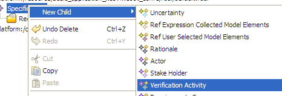

2.2 Using the RDAL Object Editor
The object editor presents the model in the form of a tree showing the containment hierarchy of object instances of the model.
It is automatically invoked when the model file (*.rdal) is opened by double-click the file in the project navigator. The object
editor is used in conjunction with the property editor to set the properties of the selected element in the tree. New elements are
created by right-clicking an element in the tree, selecting "New Child" (or "New Sibling") and the type of element to be created
(Figure 13).

Figure 13: Creating a verification activity element from the RDAL object tree editor.
Back To Top